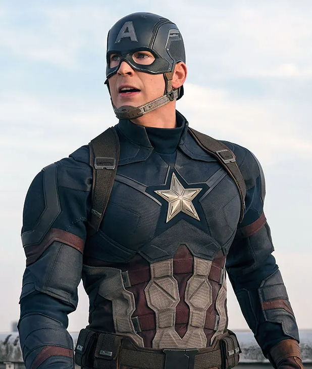

Steve Rogers

| Full Name | Steven Grant Rogers |
|---|---|
| Aliases | Captain America, Cap |
| Species | Human |
| Portrayed By | Chris Evans |
| Affiliation | United States Army, Strategic Scientific Reserve, Howling Commandos, The Avengers, S.H.I.E.L.D. |
| First MCU Appearance | Captain America: The First Avenger |
| Skills & Abilities |
|
Steve Rogers, also known as Captain America, is a World War II super soldier enhanced by Dr. Abraham Erskine’s experimental serum. Originally a frail but determined young man from Brooklyn, Steve volunteered for the Super Soldier program out of a deep sense of duty and moral conviction. After sacrificing himself to stop Hydra in 1945, he was frozen in ice and awakened nearly seventy years later, becoming a founding member of the Avengers.
Defined by unwavering integrity, tactical leadership, and resilience, Steve often serves as the moral center of the team. His commitment to personal freedom and accountability places him at the heart of major conflicts, including the Avengers’ division over the Sokovia Accords. After helping defeat Thanos, Steve returns the Infinity Stones to their proper timelines and ultimately chooses to live the life he once lost, passing the mantle of Captain America to Sam Wilson.
MCU Appearances
Films
- Captain America: The First Avenger (2011)
- The Avengers (2012)
- Captain America: The Winter Soldier (2014)
- Avengers: Age of Ultron (2015)
- Ant Man - Post-Credit Scene (2015)
- Captain America: Civil War (2016)
- Spider-Man: Homecoming - Cameo (2017)
- Avengers: Infinity War (2018)
- Captain Marvel - Mid-Credit Scene (2019)
- Avengers: Endgame (2019)